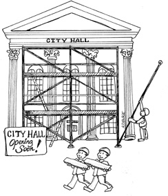

1. Chap32. FRAMEWORKS ARE DETAILS 应用程序框架是实现细节

Frameworks have become quite popular. Generally speaking, this is a good thing. There are many frameworks out there that are free, powerful, and useful.
应用程序框架现在非常流行，这在通常情况下是一件好事。许多框架都非常有效，非常有用，而且是免费的。
However, frameworks are not architectures—though some try to be.
但框架并不等同于系统架构——尽管有些框架确实以此为目标。
1.1. FRAMEWORK AUTHORS 框架作者
Most framework authors offer their work for free because they want to be helpful to the community. They want to give back. This is laudable. However, regardless of their high-minded motives, those authors do not have your best interests at heart. They can’t, because they don’t know you, and they don’t know your problems.
大部分框架的作者愿意免费提供自己的工作成果，是因为他们想要帮助整个社群，想要回馈社会。这值得鼓励，但不管这些作者的动机有多么高尚，恐怕也并没有提供针对你个人的最佳方案。即使他们想，也做不到，因为他们并不了解你，也不了解你遇到的问题。
Framework authors know their own problems, and the problems of their coworkers and friends. And they write their frameworks to solve those problems—not yours.
这些框架作者所了解的都是他们自己遇到的问题，可能还包括亲戚朋友所遇到的。他们创造框架的目的是解决这些问题——而不是解决你遇到的问题。
Of course, your problems will likely overlap with those other problems quite a bit. If this were not the case, frameworks would not be so popular. To the extent that such overlap exists, frameworks can be very useful indeed.
当然，你所遇到的问题可能和其他人遇到的大体上一致。如果不是这样，框架也就不会那么流行了。正是由于这种重合性的存在，框架才这么有用。
1.2. ASYMMETRIC MARRIAGE 单向婚姻
The relationship between you and the framework author is extraordinarily asymmetric. You must make a huge commitment to the framework, but the framework author makes no commitment to you whatsoever.
我们与框架作者之间的关系是非常不对等的。我们要采用某个框架就意味着自己要遵守一大堆约定，但框架作者却完全不需要为我们遵守什么约定。
Think about this point carefully. When you use a framework, you read through the documentation that the author of that framework provides. In that documentation, the author, and other users of that framework, advise you on how to integrate your software with the framework. Typically, this means wrapping your architecture around that framework. The author recommends that you derive from the framework’s base classes, and import the framework’s facilities into your business objects. The author urges you to couple your application to the framework as tightly as possible.
请仔细想想这一关系，当我们决定采用一个框架时，就需要完整地阅读框架作者提供的文档。在这个文档中，框架作者和框架其他用户对我们提出进行应用整合的一些建议。一般来说，这些建议就是在要求我们围绕着该框架来设计自己的系统架构。譬如，框架作者会建议我们基于框架中的基类来创建一些派生类，并在业务对象中引入一些框架的工具。框架作者还会不停地催促我们将应用与框架结合得越紧密越好。
For the framework author, coupling to his or her own framework is not a risk. The author wants to couple to that framework, because the author has absolute control over that framework.
对框架作者来说，应用程序与自己的框架耦合是没有风险的。毕竟作为作者，他们对框架有绝对的控制权，强耦合是应该的。
What’s more, the author wants you to couple to the framework, because once coupled in this way, it is very hard to break away. Nothing feels more validating to a framework author than a bunch of users willing to inextricably derive from the author’s base classes.
与此同时，作者当然是非常希望让我们的应用与其框架紧密结合的，因为这意味着脱离框架会很困堆。作为框架作者来说，没有什么比让一堆用户心甘情愿地基于他的框架基类来构建派生类更自豪的事情了。
In effect, the author is asking you to marry the framework—to make a huge, long-term commitment to that framework. And yet, under no circumstances will the author make a corresponding commitment to you. It’s a one-directional marriage. You take on all the risk and burden; the framework author takes on nothing at all.
换句话说，框架作者想让我们与框架订终身——这相当于我们要对他们的框架做一个巨大而长期的承诺，而在任何情况下框架作者都不会对我们做出同样的承诺。这种婚姻是单向的。我们要承担所有的风险，而框架作者则没有任何风险。
1.3. THE RISKS 风险
What are the risks? Here are just a few for you to consider.
那么我们要承担的风险究竟有哪些呢？我们可以想到的至少有以下这几项：
- The architecture of the framework is often not very clean. Frameworks tend to violate the Dependency Rule. They ask you to inherit their code into your business objects—your Entities! They want their framework coupled into that innermost circle. Once in, that framework isn’t coming back out. The wedding ring is on your finger; and it’s going to stay there.
- The framework may help you with some early features of your application. However, as your product matures, it may outgrow the facilities of the framework. If you’ve put on that wedding ring, you’ll find the framework fighting you more and more as time passes.
- The framework may evolve in a direction that you don’t find helpful. You may be stuck upgrading to new versions that don’t help you. You may even find old features, which you made use of, disappearing or changing in ways that are difficult for you to keep up with.
- A new and better framework may come along that you wish you could switch to.
- 框架自身的架构设计很多时候并不是特别正确的。框架本身可能经常违反依赖关系原则。譬如，框架可能会要求我们将代码引入到业务对象中——甚至是业务实体中。框架可能会想要我们将框架耦合在最内圈代码中。而我们一旦引入，就再也不会离开该框架了，这就像戴上结婚戒指一样，从此一生不离不弃了。
- 框架可能会帮助我们实现一些应用程序的早期功能，但随着产品的成熟，功能要求很可能超出框架所能提供的范围。而且随着时间的推移，我们也会发现在应用的开发过程中，自己与框架斗争的时间要比框架帮助我们的时间长得多。
- 框架本身可能朝着我们不需要的方向演进。也许我们会被迫升级到一个并不需要的新版本，甚至会发现自己之前所使用的旧功能突然消失了，或悄悄改变了行为。
- 未来我们可能会想要切换到一个更新、更好的框架上。
1.4. THE SOLUTION 解决方案
What is the solution?
解决方案是什么呢？
Don’t marry the framework!
请不要嫁给框架
Oh, you can use the framework—just don’t couple to it. Keep it at arm’s length. Treat the framework as a detail that belongs in one of the outer circles of the architecture. Don’t let it into the inner circles.
我们可以使用框架——但要时刻警惕，别被它拖住。我们应该将框架作为架构最外圈的一个实现细节来使用，不要让它们进入内圈。
If the framework wants you to derive your business objects from its base classes, say no! Derive proxies instead, and keep those proxies in components that are plugins to your business rules.
如果框架要求我们根据它们的基类来创建派生类，就请不要这样做！我们可以创造一些代理类，同时把这些代理类当作业务逻辑的插件来管理。
Don’t let frameworks into your core code. Instead, integrate them into components that plug in to your core code, following the Dependency Rule.
另外，不要让框架污染我们的核心代码，应该依据依赖关系原则，将它们当作核心代码的插件来管理。
For example, maybe you like Spring. Spring is a good dependency injection framework. Maybe you use Spring to auto-wire your dependencies. That’s fine, but you should not sprinkle @autowired annotations all throughout your business objects. Your business objects should not know about Spring.
以 Spring 为例，它作为一个依赖注入框架是不错的，也许我们会需要用 Spnng 来自动连接应用程序中的各种依赖关系。这不要紧，但是千万别在业务对象里到处写
@autowired注解。业务对象应该对 Spring 完全不知情才对。
Instead, you can use Spring to inject dependencies into your Main component. It’s OK for Main to know about Spring since Main is the dirtiest, lowest-level component in the architecture.
反之，我们也可以利用 Spring 将依赖关系注入到 Main 组件中，毕竟 Main 组件作为系统架构中最低层、依赖最多的组件，它依赖于 Spring 并不是问题。
1.5. I NOW PRONOUNCE YOU … 不得不接受的依赖
There are some frameworks that you simply must marry. If you are using C++, for example, you will likely have to marry STL—it’s hard to avoid. If you are using Java, you will almost certainly have to marry the standard library.
有一些框架是避免不了使用的。例如，如果你在用 C++，那么 STL 就是很难避免使用的。如果你在用 Java，那么标准类库也是不太可能避免使用的。
That’s normal—but it should still be a decision. You must understand that when you marry a framework to your application, you will be stuck with that framework for the rest of the life cycle of that application. For better or for worse, in sickness and in health, for richer, for poorer, forsaking all others, you will be using that framework. This is not a commitment to be entered into lightly.
这很正常——但这仍然应该是你主动选择的结果。你必须明白，如果一旦在项目中引入一个框架，很有可能在整个生命周期中都要依赖于它，不管后来情形怎么变化，这个决定都很难更改了。因此，不应该草率地做出决定。
1.6. CONCLUSION 本章小结
When faced with a framework, try not to marry it right away. See if there aren’t ways to date it for a while before you take the plunge. Keep the framework behind an architectural boundary if at all possible, for as long as possible. Perhaps you can find a way to get the milk without buying the cow.
总而言之。当我们面临框架选择时，尽量不要草率地做出决定。在全身心投入之前，应该首先看看是否可以部分地采用以增加了解。另外，请尽可能长时间地将框架留在架构边界之外，越久越好。因为谁知道呢，也许你可以不用买奶牛也能喝到牛奶。